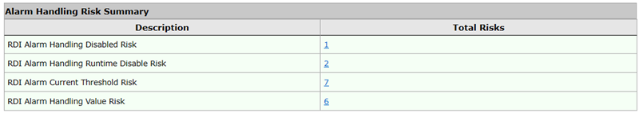
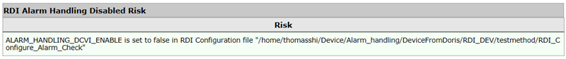
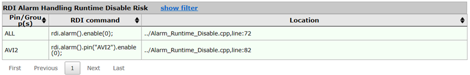
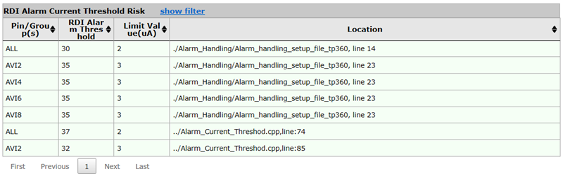
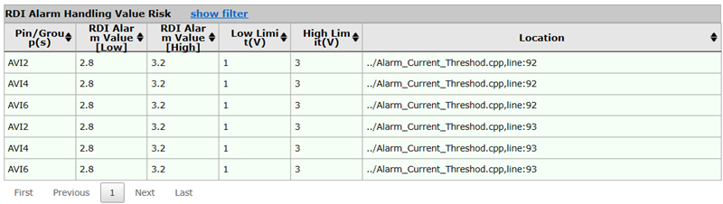

RDI alarm handling risk report
The RDI alarm handling risk report displays risks that are generated by disabling the RDI alarm handling, and the pins or pin groups whose alarm handling thresholds exceed those defined in the release checker.
Alarm handling risk summary
This table shows the number of risks in each category. Clicking a number in the Total Risks column displays the corresponding risk table.

RDI alarm handling disable risk
This table lists the alarm setup files in which the alarm handling is set to false.

RDI alarm handling runtime disable risk
This table lists the locations where the alarm handling is disabled during the execution of the test program.

- Pin/Group(s)
- The pin or pin group for which the alarm handling is disabled.
All means that the alarm handling is disabled for the whole test program execution.
- RDI command
- The RDI command which disables the alarm handling.For example:
rdi.alarm().pin("AVI2").enable(0);AVI2 is the pin for which the alarm handling is disabled.
enable(0) indicates that the alarm handling is disabled.
For more information, see rdi.alarm().enable() and rdi.alarm().pin().enable().
- Location
- The specific location, including the test method file name and the line number, where the alarm handling is disabled.
RDI alarm current threshold risk
This table lists the pins or pin groups where the current threshold specified for RDI alarm handling exceeds that specified in the release checker.

- Pin/Group (s)
- The pin or pin group where the current threshold specified for RDI alarm handling exceeds
that specified in the release checker.
All means that the overall current threshold set up for RDI alarm handling exceeds that specified in the release checker.
- RDI Alarm Threshold
- The current threshold value set for RDI alarm handling.
- Limit Value (uA)
- The current threshold value set in the release checker.
- Location
- The location, including the test method or alarm setup file name and the line number, where the current threshold is specified.
RDI alarm handling value risk
This table lists the pins or pin groups whose voltage limit values specified for RDI alarm handling exceed those set up in the release checker.

- Pin/Group (s)
- The pin or pin group whose voltage limit values specified for RDI alarm handling exceed those specified in the release checker.
- RDI Alarm Value [Low]
- The low voltage limit value set for the RDI alarm handling.
- RDI Alarm Value [High]
- The high voltage limit value set for the RDI alarm handling.
- Low Limit (V)
- The low voltage limit value specified in the release checker.
- High Limit (V)
- The high voltage limit value specified in release checker.
- Location
- The location, including the test method file name and the line number, where the alarm handling is executed.
You can filter the tables by entering text in the fields below the column header; after you press Return, only rows will be displayed in which the column contains the filter value.
To show and hide the filters, respectively, click the Show Filter and Hide Filter links in the table title.
You can sort the table by clicking the upward-pointing and downward-pointing triangles in the column titles.
If more than one page of results was found, you can browse the pages using the controls below the table.
Functional changes
- Introduced in SmarTest 7.10.1